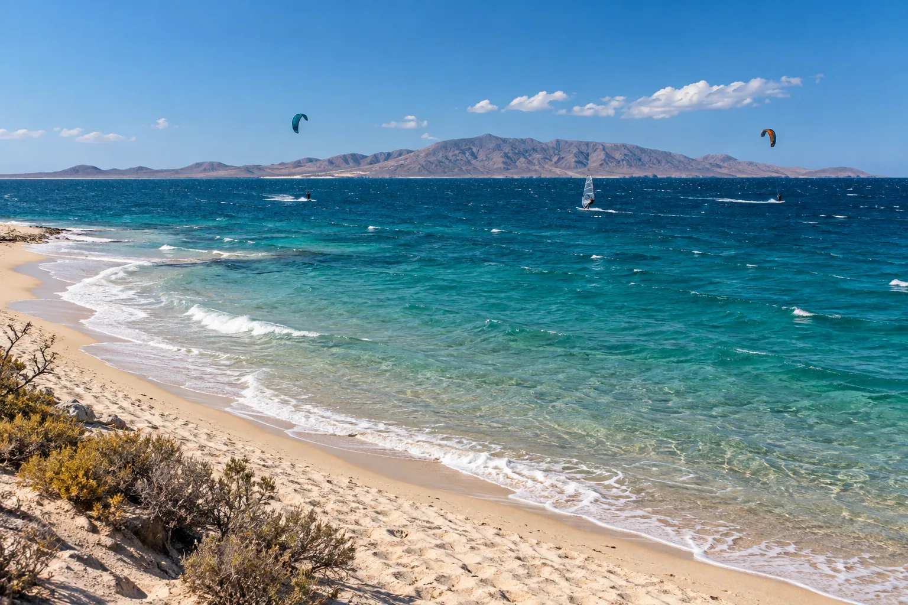

La Ventana
Basse-Californie du Sud, Mexique · kitesurf, windsurf

Village de la mer de Cortés où souffle un vent du nord régulier de novembre à mars. Une référence du kite nord-américain.
- Lieu
- Basse-Californie du Sud, Mexique
- Niveau
- Intermédiaire
- Activités
- kitesurf, windsurf
- Type d'eau
- Mer / océan
- Coordonnées
- 24.05, -109.99 (position approximative du secteur)
Dangers à connaître
- Vent soutenu.
- Raies en bord de plage : traîne les pieds.
Le conseil d'Ocean Buddy
Le vent est parallèle à la côte : idéal pour naviguer en sécurité.
Ouvrir dans Ocean Buddy Télécharger sur l'App Store
Source : Fiche Ocean Buddy · septembre 2026 · à vérifier localement.